L7: Data Visualization 1
Bogdan G. Popescu
John Cabot University
Intro
Visualization in R is about presenting data in an aesthetically pleasing way
More importantly, visualization is about presenting the data in a truthful way
Finding the Truth
One good way to tell if something is true or not is by using science
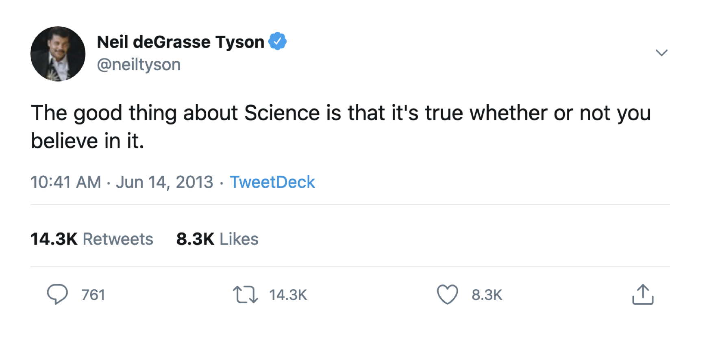
Truth vs. Art
However, data visualization can affect perceptions of what is scientific
The scientist can consciosly or unconsciously make particular style choices to a graph that can affect such perceptions
Thus, perception of science can sometimes be impacted by aesthetic choices and the way content is presented
Duties of a Data Analyst
Not manipulate data and thus, not lie
Find the right balance between dumbing down and sounding too esoteric when communicating results
You are utimately a translator
Emphasize the story and make data available
The Data
At the most basic level, we can present snippets of the data or basic information about the data
The dataframe once you load it into R looks like the following:
setwd ("/Users/bgpopescu/Library/CloudStorage/Dropbox/john_cabot/teaching/big_data/week4/data/" )#Step1: Loading the data <- read.csv (file = './life_exp_urb.csv' )#Step2: Examining the first five entries head (life_exp_urb, n= 5 )
Entity life_expectancy urbanization type
1 Aruba 70.25972 48.05939 Everything Else
2 Afghanistan 45.38333 18.61175 Everything Else
3 Angola 45.08466 37.53970 Everything Else
4 Anguilla 69.44028 NA Everything Else
5 Albania 68.28611 40.44416 Everything Else
The Data
In principle, we can just present basic information about the data:
<- subset (life_exp_urb, select = c (life_expectancy, urbanization))names (df)<- c ("life_exp" , "urb" )head (df, n= 10 )
# A tibble: 10 × 2
life_exp urb
<dbl> <dbl>
1 70.3 48.1
2 45.4 18.6
3 45.1 37.5
4 69.4 NA
5 68.3 40.4
6 77.0 87.0
7 66.1 80.7
8 65.4 85.3
9 67.2 63.1
10 68.6 79.8
mean (df$ life_exp, na.rm= TRUE )
cor (df$ urb, df$ life_exp, use = "complete.obs" )
This is reasonable.
This is reasonable.
There is a positive correlation.
Visualizing the Relationship
But the following scatterplot is more compelling.
library (ggplot2)ggplot (data = df, mapping = aes (x= urb, y= life_exp))+ geom_point ()
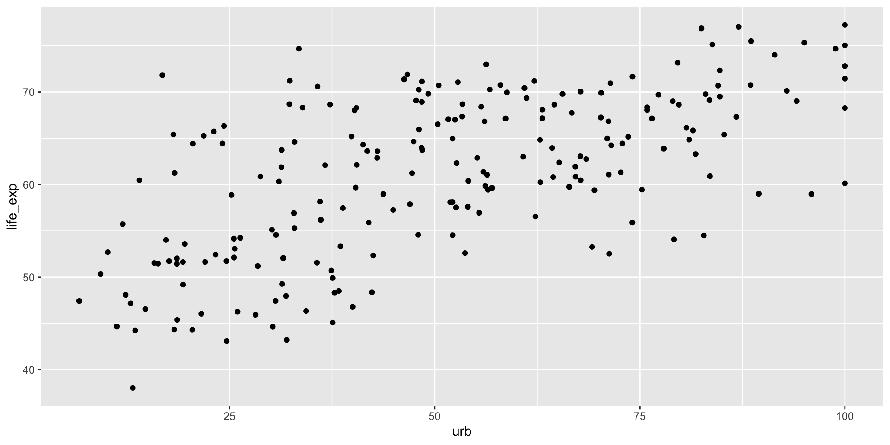
Visualization
Good visualizations are:
truthful
functional
beautiful
insightful
enlightening
Visualization
“Graphical excellence is the well-designed presentation of interesting data —a matter of substance, of statistics, and of design … [It] consists of complex ideas communicated with clarity, precision, and efficiency .[…] [It] is that which gives to the viewer the greatest number of ideas in the shortest time with the least ink in the smallest space … And graphical excellence requires telling the truth about the data.”
Edward Tufte, The Visual Display of Quantitative Information, p. 51
Bad Visualizations 1
The figure has way too many categories
Bad Visualizations 2
The categories in a pie chart should add up to 100%
The areas should correspond to the percentage size
Bad Visualizations 3
The categories in a pie chart should add up to 100%
Goals of Visualization
R can help us achieve great visualizations with the help of ggplot2
Goals of Visualization
R can help us achieve great visualizations with the help of ggplot2
Goals of Visualization
R can help us achieve great visualizations with the help of ggplot2
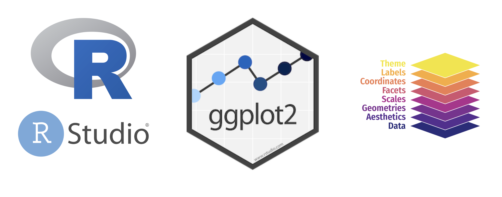
Visualizations
Part of visualization is how we translate essential content to different forms for specific audiences
Visualizations should ultimately tell stories
Truth comes a combination of content and form.
Colors
On the most fundamental level, we need to use the right colors for our visualizations
This relevant for:
Clarity and Readability : users can distinguish among different categories
Accessibility : color-blind people can also see the different categories in your visualization
Emphasis : the right colors can be used to emphasize specific aspects of the data or analysis
Consistency : using a consistent color palette for the same project is helpful
Adobe Color
With Adobe Color you can:
Create color themes based on color theory
Extract themes & gradients from pictures
Create Accessible themes for color-blind audiences
Color Contrast
It is important to use color with a high contrast
Color Contrast Example
Here is a low color contrast
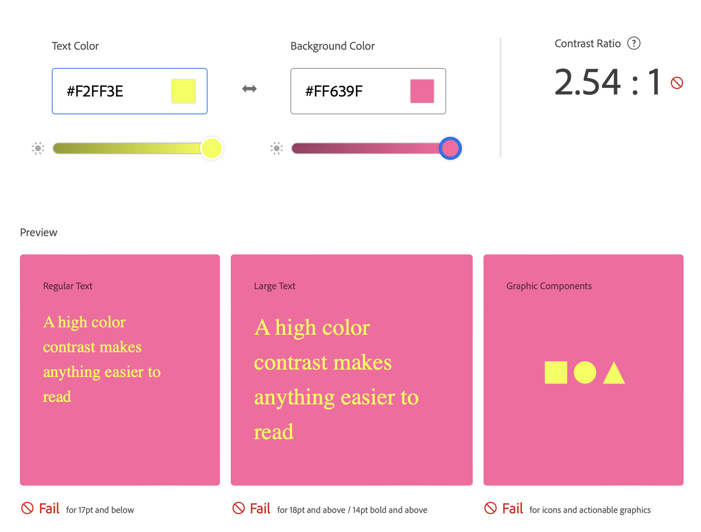
Color Contrast Example
Here is a low color contrast
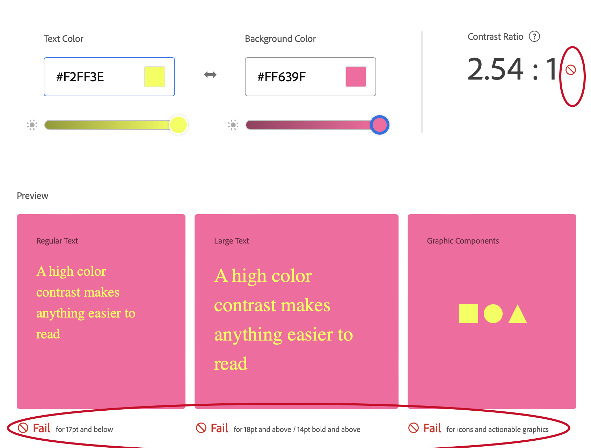
Color Contrast Example
Here is a high color contrast
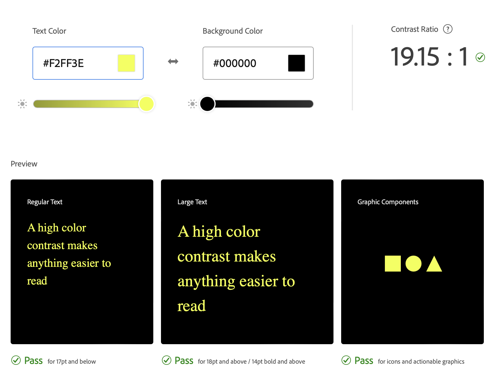
Color Contrast Example
Here is a high color contrast
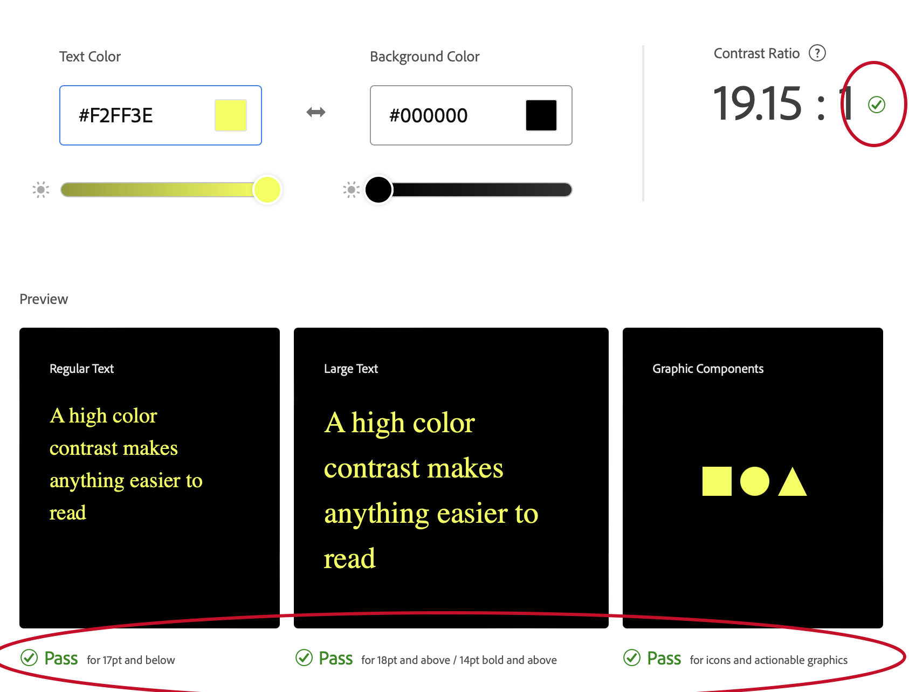
Color
8% of men and 0.05% have some form of color blindness
Thus, colors should be distinguishable by people with different forms of color blindness
Color Contrast
The Viridis palette in R allows us to create color-blind friendly graphs
These are predefined palettes that were widely used.
Color Contrast
This is the difference that this makes
ggplot () + geom_sf (data = merged, aes (fill = life_expectancy))
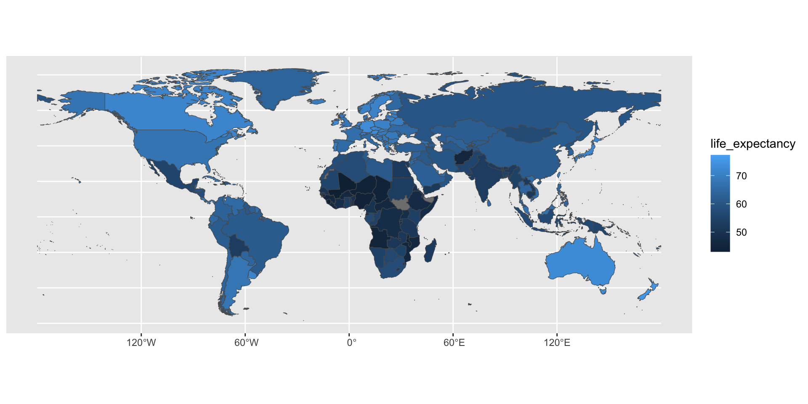
Color Contrast
This is the difference that this makes
ggplot () + geom_sf (data = merged, aes (fill = life_expectancy))+ scale_fill_viridis_b (name = "Life Expectancy" , option = "viridis" )
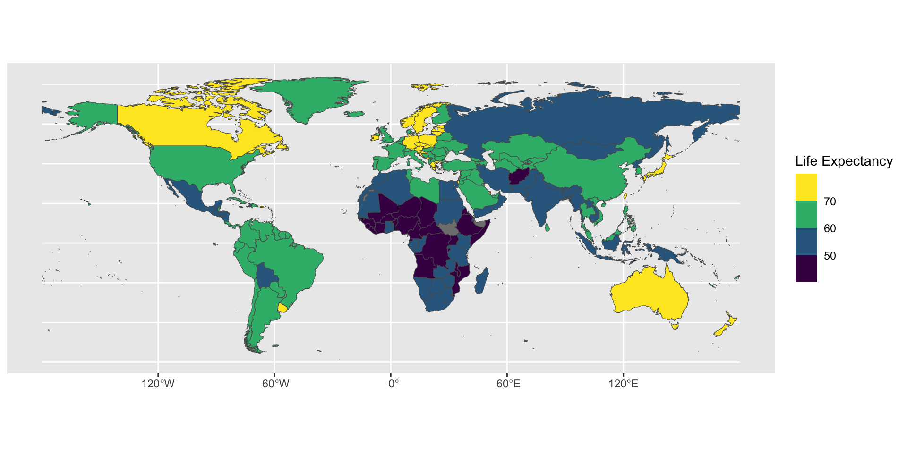
Mapping data to aesthetics
On the most fundamental level, we can plot points in ggplot2
urbanization
xgeom_point()
life_expectancy
ygeom_point()
type
colorgeom_point()
Mapping data to aesthetics
This is what this looks like for our data
ggplot (data = life_exp_urb, mapping = aes (x= urbanization, y= life_expectancy, color = type))+ geom_point ()
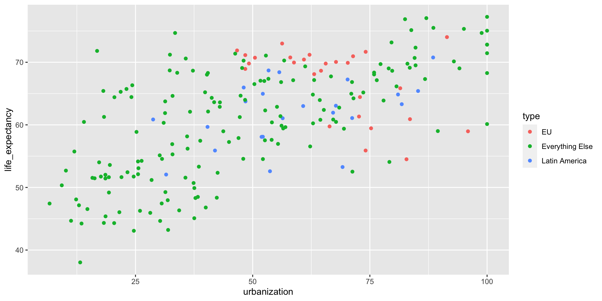
Grammatical Layers
Thus, we have data, aesthetics, and geometries.
We can think of these as layers
We can add them together in ggplot() with +
Possible geoms
Example geom
What it does
Points
Bar charts
Text
Boxplots
Maps
Possible geoms
There are many possible geoms
Check out the layers sections of the ggplot documentation
Other Layers
There are many grammatical layers to describe graphs
We can sequentially add layers to ggplot
Example layer
What it does
Make the x-axis continuous
Manually specify axis ticks
Log the x-axis
Use a gradient
Fill with discrete viridis colors
scale_x_log10()
ggplot (data = life_exp_urb, mapping = aes (x= urbanization, y= life_expectancy, color = type, size = life_expectancy))+ geom_point ()+ scale_x_log10 ()
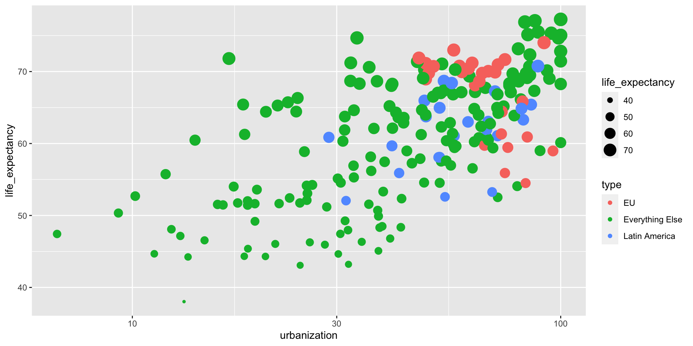
scale_x_log10()Note the difference when we don’t use scale_x_log10()
ggplot (data = life_exp_urb, mapping = aes (x= urbanization, y= life_expectancy, color = type, size = life_expectancy))+ geom_point ()
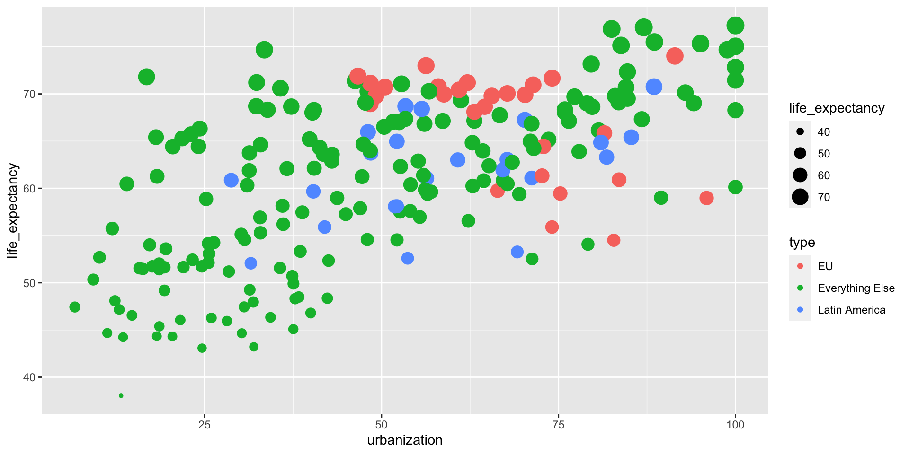
scale_color_viridis_d()
ggplot (data = life_exp_urb, mapping = aes (x= urbanization, y= life_expectancy, color = type, size = life_expectancy))+ geom_point ()+ scale_x_log10 ()+ scale_color_viridis_d ()
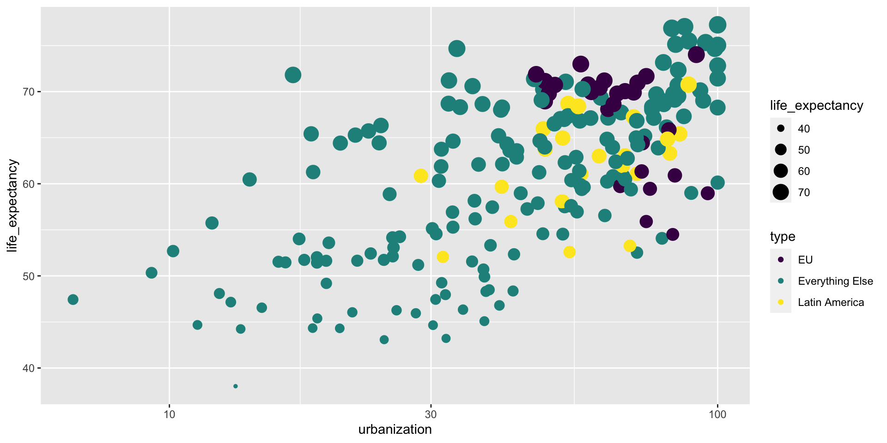
Facets
Example layer
What it does
Put all facets in one column
Put all facets in one row
Facets
facet_wrap(vars(continent))
ggplot (data = life_exp_urb, mapping = aes (x= urbanization, y= life_expectancy, color = type, size = life_expectancy))+ geom_point ()+ scale_x_log10 ()+ facet_wrap (vars (type))
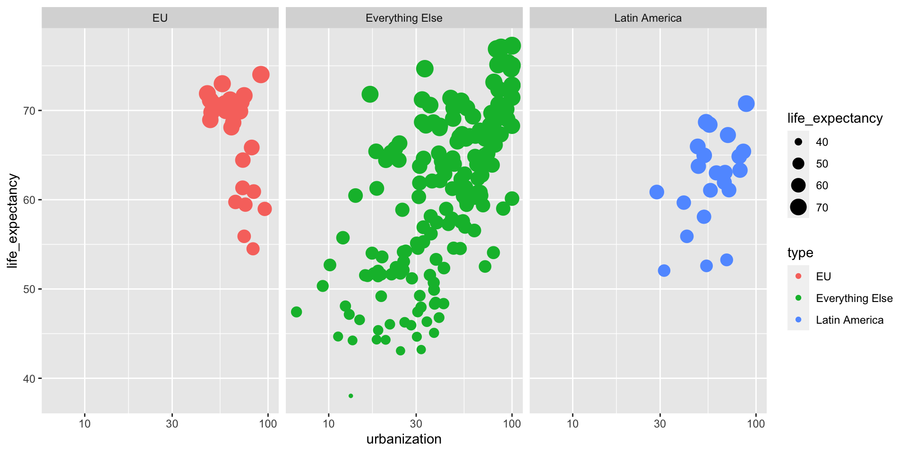
Coordinates
Example layer
What it does
Zoom in where y is 1–10
Switch x and y
Coordinates
This is what happens if we limit the coordinates
ggplot (data = life_exp_urb, mapping = aes (x= urbanization, y= life_expectancy, color = type, size = life_expectancy))+ geom_point ()+ coord_cartesian (ylim = c (30 , 50 ), xlim = c (10 , 40 ))
Coordinates
This is what happens if we flip the axes
ggplot (data = life_exp_urb, mapping = aes (x= urbanization, y= life_expectancy, color = type, size = life_expectancy))+ geom_point ()+ coord_flip ()
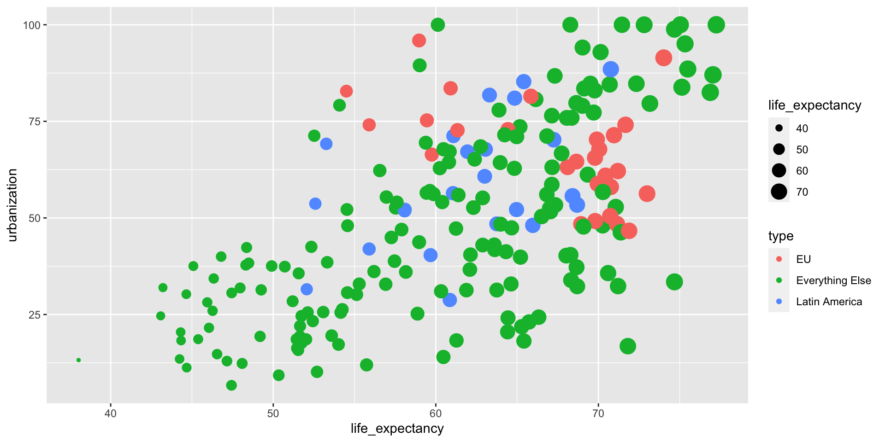
Labels
You can add labels to the plot using a labs layer
Example layer
What it does
Title
Caption
y-axis
Title of size legend
Labels
ggplot (data = life_exp_urb, mapping = aes (x= urbanization, y= life_expectancy, color = type, size = life_expectancy))+ geom_point ()+ labs (title = "Health and Urbanization" ,subtitle = "Insights" ,x = "Urbanization" ,y = "Life Expectancy" ,color = "Continent" ,size = "Population" ,caption = "Source: Our World in Data" )
Themes
You can change the appearance of the plots by changing the theme
Example layer
What it does
Default grey background
Black and white
Dark
Minimal
theme_economist()This can be achieved after loading the ggthemes library
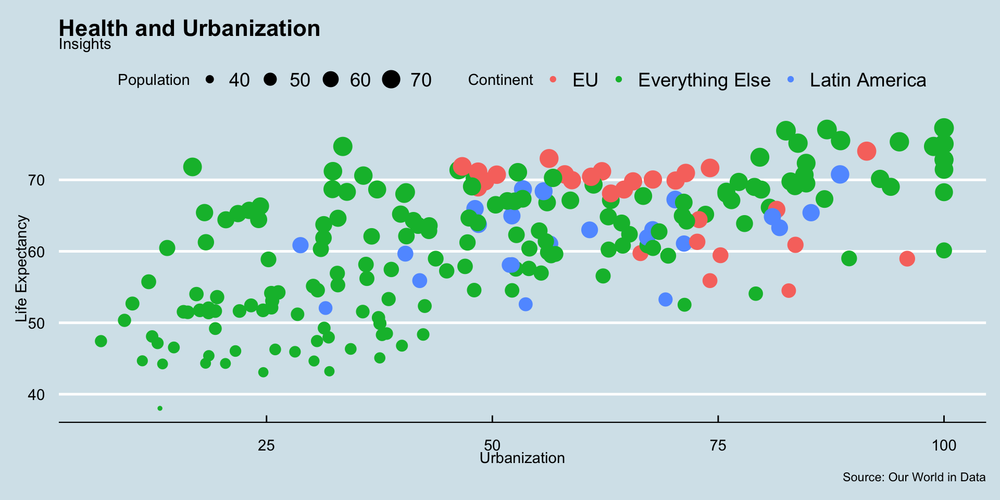
theme_wsj()This can be achieved after loading the ggthemes library
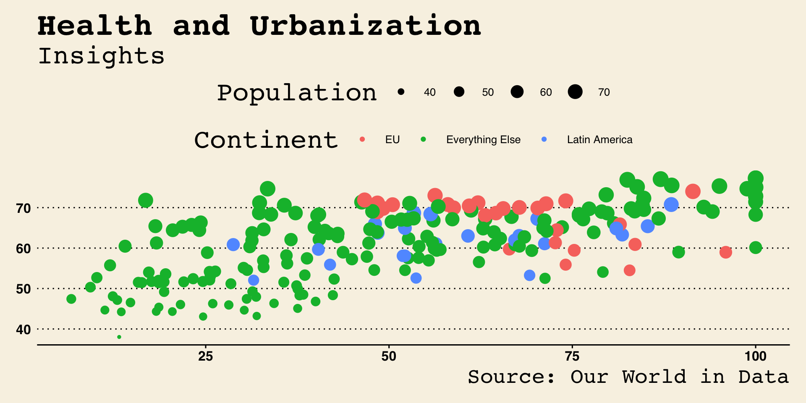
theme_pomological()This can be achieved after installing and loading the ggpomological library
#devtools::install_github("gadenbuie/ggpomological") library ("ggpomological" )
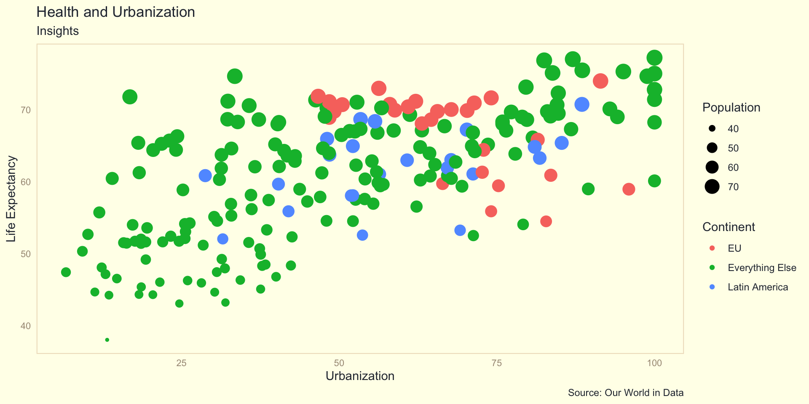
Theme Options
We can make adjustments to the theme:
ggplot (data = life_exp_urb, mapping = aes (x= urbanization, y= life_expectancy, color = type, size = life_expectancy))+ geom_point ()+ labs (title = "Health and Urbanization" ,subtitle = "Insights" ,x = "Urbanization" ,y = "Life Expectancy" ,color = "Continent" ,size = "Population" ,caption = "Source: Our World in Data" )+ theme_bw ()+ theme (legend.position = "bottom" ,plot.title = element_text (face = "bold" ),panel.grid = element_blank (),axis.title.y = element_text (face = "italic" ))
Theme Options
We can make adjustments to the theme:
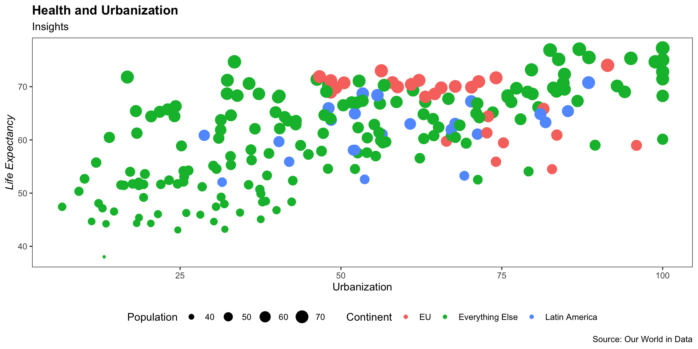
Anatomy of a Theme
Anatomy of a Theme
Thus, each element of a theme can be manipulated.
There 94 possible arguments that you can manipulate. For example:
Legend background = legend.background
Text-based elements = element_text()
Disabling elements = element_blank()
Something as specific as the length of tick marks the bottom = axis.ticks.length.x.bottom
Let us create our own theme
Let us create our own theme
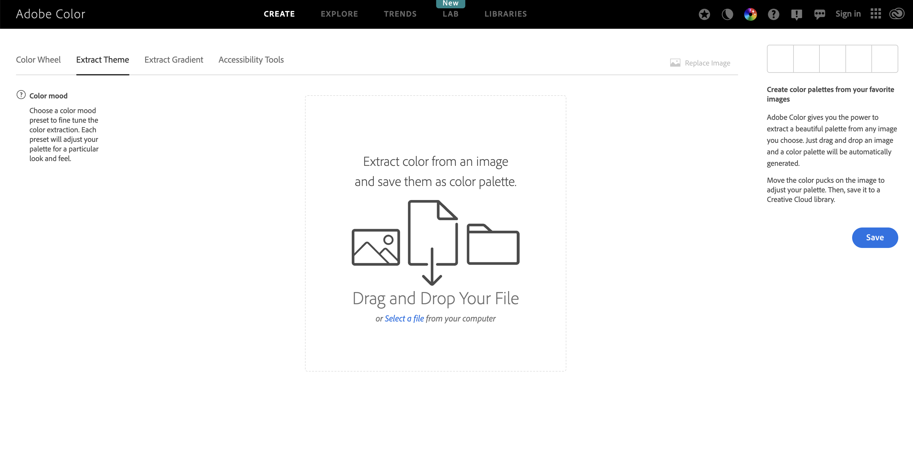
Let us create our own theme
Once we do that we obtain the following color scheme:
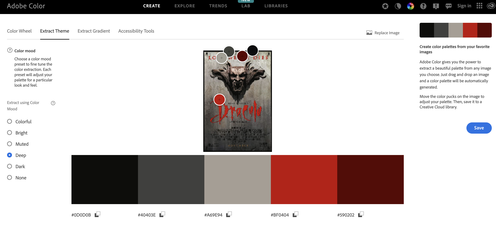
Let us create our own theme
Note the color codes
Let us create our own theme
We can finally use the following colors:
Greys
#0D0D0B - almost black
#40403E - dark grey
#A69E94 - light grey
Reds
#BF0404 - red
#590202 - brown
Let us create our own theme
<- c ("#BF0404" , "#590202" , "grey90" )ggplot (data = life_exp_urb, mapping = aes (x= urbanization, y= life_expectancy, color = type, size = life_expectancy))+ geom_point ()+ theme_bw ()+ scale_color_manual (values = color_palette)+ # Assign colors manually theme (panel.background = element_rect (fill = "white" ), # Set background color axis.title.x = element_text (color = "#BF0404" , face = "bold" ), # Set x-axis label color axis.title.y = element_text (color = "#BF0404" , face = "bold" ),axis.line = element_line (color = "#BF0404" , size = 1.5 ), panel.grid = element_blank (), panel.border = element_blank (), panel.grid.major.y = element_line (colour = "#40403E" , size = 0.5 , linetype = "dotted" ))
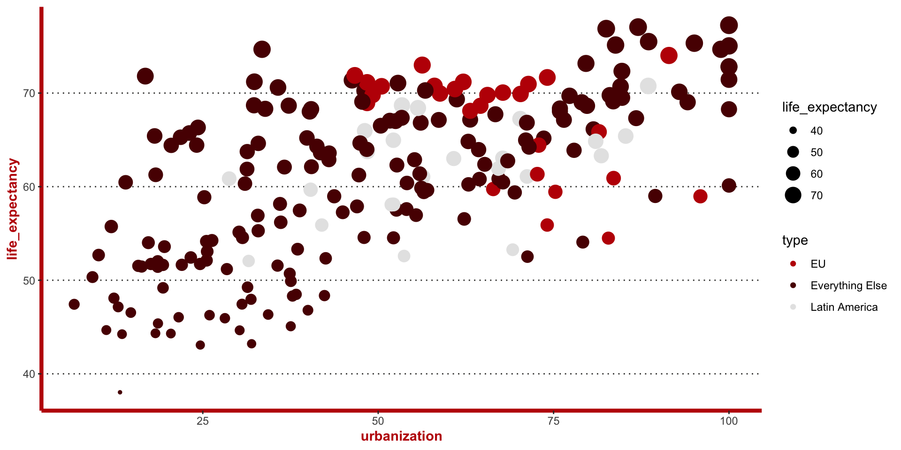
Let us create our own theme
Anatomy of a Theme
You should check out C17: Themes of ggplot2: Elegant Graphics for Data Analysis (3e)
You will learn how to exercise fine control over the non-data elements of your plot.
Adding the Layers Together
We can make a plot sequentually to see how each grammatical layer changes the appearance
Adding the Layers Together
Start with data and aesthetics
ggplot (data = life_exp_urb, mapping = aes (x= urbanization, y= life_expectancy, color = type))
Adding the Layers Together
Add a geom point
ggplot (data = life_exp_urb, mapping = aes (x= urbanization, y= life_expectancy, color = type))+ geom_point ()
Adding the Layers Together
Adding geom smooth
ggplot (data = life_exp_urb, mapping = aes (x= urbanization, y= life_expectancy, color = type))+ geom_point ()+ geom_smooth ()
Adding the Layers Together
Getting straight lines
ggplot (data = life_exp_urb, mapping = aes (x= urbanization, y= life_expectancy, color = type))+ geom_point ()+ geom_smooth (method = "lm" )
Adding the Layers Together
Use a viridis color scale
ggplot (data = life_exp_urb, mapping = aes (x= urbanization, y= life_expectancy, color = type))+ geom_point ()+ geom_smooth (method = "lm" )+ scale_color_viridis_d ()
Adding the Layers Together
Facets by continents
ggplot (data = life_exp_urb, mapping = aes (x= urbanization, y= life_expectancy, color = type))+ geom_point ()+ geom_smooth (method = "lm" )+ scale_color_viridis_d ()+ facet_wrap (vars (type), ncol = 1 )
Adding the Layers Together
Add labels
ggplot (data = life_exp_urb, mapping = aes (x= urbanization, y= life_expectancy, color = type))+ geom_point ()+ geom_smooth (method = "lm" )+ scale_color_viridis_d ()+ facet_wrap (vars (type), ncol = 1 )+ labs (title = "Health and Urbanization" ,x = "Urbanization" ,y = "Life Expectancy" ,color = "Continent" ,size = "Population" )
Adding the Layers Together
Add theme
ggplot (data = life_exp_urb, mapping = aes (x= urbanization, y= life_expectancy, color = type))+ geom_point ()+ geom_smooth (method = "lm" )+ scale_color_viridis_d ()+ facet_wrap (vars (type), ncol = 1 )+ labs (title = "Health and Urbanization" ,x = "Urbanization" ,y = "Life Expectancy" ,color = "Continent" ,size = "Population" )+ theme_bw ()
Adding the Layers Together
Modify the theme
ggplot (data = life_exp_urb, mapping = aes (x= urbanization, y= life_expectancy, color = type))+ geom_point ()+ geom_smooth (method = "lm" )+ scale_color_viridis_d ()+ facet_wrap (vars (type), ncol = 1 )+ labs (title = "Health and Urbanization" ,x = "Urbanization" ,y = "Life Expectancy" ,color = "Continent" ,size = "Population" )+ theme_bw ()+ theme (legend.position = "bottom" ,plot.title = element_text (face = "bold" ))
Describing graphs with grammar
We can map life expectancy to the x-axis, add a histogram with bins, fill and facet by continent
ggplot (data = life_exp_urb, mapping = aes (x = life_expectancy,fill = type)) + geom_histogram (binwidth = 5 , color = "white" ) + guides (fill = "none" ) + # Turn off legend facet_wrap (vars (type))
What is a histogram?
Histograms allow us to better understand how frequently or infrequently certain values occur in our dataset.
Imagine a set of values that are spaced out along a number line.
What is a histogram?
To construct a histogram, a section of the number line is divided into equal chunks, called bins.
Next, count how many data points sit inside each bin, and draw bars, one for each bin
The heights of the weights correspond to the number of data points.
What is a histogram?
Label the data (in the example below each data point is an SAT score)
Draw in a y-axis which counts the number of data points in each bin
What is a histogram?
This how it all looks together
What is a histogram?
And these are three histograms applied to our data.
ggplot (data = life_exp_urb, mapping = aes (x = life_expectancy,fill = type)) + geom_histogram (binwidth = 5 , color = "white" ) + guides (fill = "none" ) + # Turn off legend facet_wrap (vars (type))
Describing graphs with grammar
We can map continent to the x-axis, life expectancy to the y-axis, add violin plots and semi-transparent boxplots, fill and facet by continent
ggplot (data = life_exp_urb, mapping = aes (x = type,y = life_expectancy,fill = type)) + geom_violin () + geom_boxplot (alpha = 0.5 ) + guides (fill = "none" ) # Turn off legend
Adding a Time Dimension
library ("gganimate" )ggplot (final2, aes (x = urb, y = life_exp, size = urb, color= Entity)) + geom_point (alpha = 0.7 ) + scale_size (range = c (2 , 12 )) + guides (size = "none" , color = "none" ) + facet_wrap (~ continent)+ scale_color_viridis_d ()+ #animate arguments labs (title = 'Year: {frame_time}' , x = 'Urbanization' , y = 'Life Expectancy' ) + transition_time (Year) + ease_aes ('linear' )
Adding a Time Dimension
Here is how I obtained the final2 dataframe:
#Setting path library ("dplyr" )setwd ("/Users/bgpopescu/Library/CloudStorage/Dropbox/john_cabot/teaching/big_data/week4/data/" )#Step1: Loading the data <- read.csv (file = './life-expectancy.csv' )<- read.csv (file = './share-of-population-urban.csv' )#Step2: Removing countries with no country code <- subset (life_expectancy, Code!= "" )#Step3: Changing variable name names (life_expectancy2)[names (life_expectancy2)== "Life.expectancy.at.birth..historical." ]<- "life_exp" #Step4: Keeping only relevant vars <- subset (life_expectancy2, selec= c ("Entity" , "Code" , "Year" , "life_exp" ))#Step5: Removing countries with no country code <- subset (urbanization, Code!= "" )#Step6: Changing variable name names (urbanization2)[names (urbanization2)== "Urban.population....of.total.population." ]<- "urb" #Step7: Keeping only relevant vars <- subset (urbanization2, selec= c ("Code" , "Year" , "urb" ))#Step8: Performing a merge <- left_join (life_expectancy3, urbanization3, by = c ("Code" = "Code" ,"Year" = "Year" ))#Step9: Removing NAs <- final[complete.cases (final), ]#Step10: Defining continents #EU Countries <- c ("Austria" ,"Belgium" ,"Bulgaria" ,"Croatia" ,"Cyprus" ,"Czechia" ,"Denmark" ,"Estonia" ,"Finland" ,"France" ,"Germany" ,"Greece" ,"Hungary" ,"Ireland" ,"Italy" ,"Latvia" ,"Lithuania" ,"Luxembourg" ,"Malta" ,"Netherlands" ,"Poland" ,"Portugal" ,"Romania" ,"Slovakia" ,"Slovenia" ,"Spain" ,"Sweden" )<- c ("Belize" ,"Costa Rica" ,"El Salvador" ,"Guatemala" ,"Honduras" ,"Mexico" ,"Nicaragua" ,"Panama" ,"Argentina" ,"Bolivia" ,"Brazil" ,"Chile" ,"Colombia" ,"Ecuador" ,"Guyana" ,"Paraguay" ,"Peru" ,"Suriname" ,"Uruguay" ,"Venezuela" ,"Cuba" ,"Dominican Republic" ,"Haiti" )#Step11: Labeling continents $ continent[final2$ Entity %in% eu_countries]<- "EU" $ continent[final2$ Entity %in% latam_countries]<- "Latin America" $ continent[is.na (final2$ continent)]<- "Everything Else"
Conclusion
Today, we covered quite some ground:
importance of color choices
mapping data to aesthetics: points
facets, coordinates, labels, themes
theme option manipulation
using histograms, violin, boxplot
creating time animations